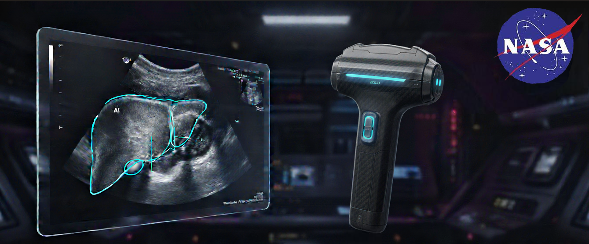

Celestia: An Ultrasound AI Analysis Tool
Atlas Sonography is committed to delivering accurate, reliable AI analysis on ultrasound images for use in extreme environment.
Meet The Team
Our team of experienced Biomedical Engineers are dedicated to providing top-notch AI analysis for ultrasound imaging.
About Celestia
- Android-Based AI Analysis App
- Organ Identification & Anomoly Detection
- 95% Confidence Level